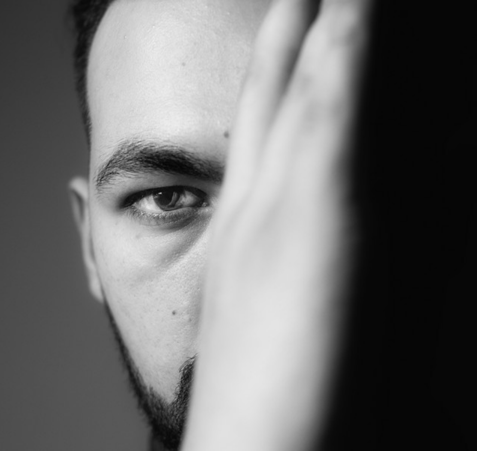
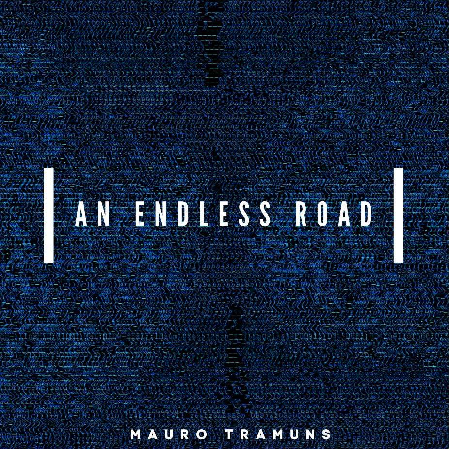
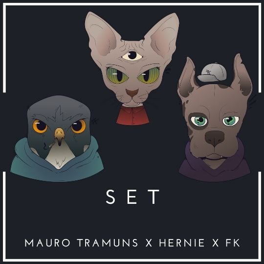

"The chase is better
than the catch..."

ULTIMOS LANZAMIENTOS

El EP más escuchado de Mauro Tramúns

Un EP basado en el inicio del camino constante.
Repleto de sonidos celestiales, en la busqueda
de un album
que pactara la historia como melodia

En este giro de eventos, Hernie y FK se unen
a Mauro para craftear este sabroso tema.